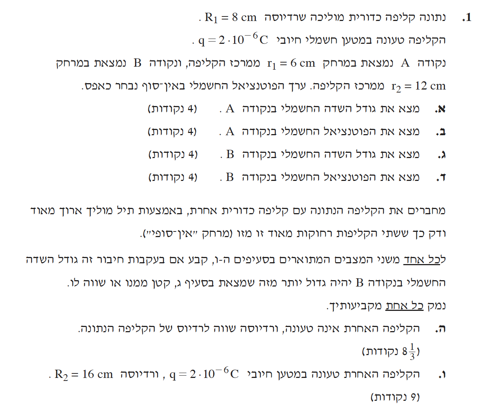
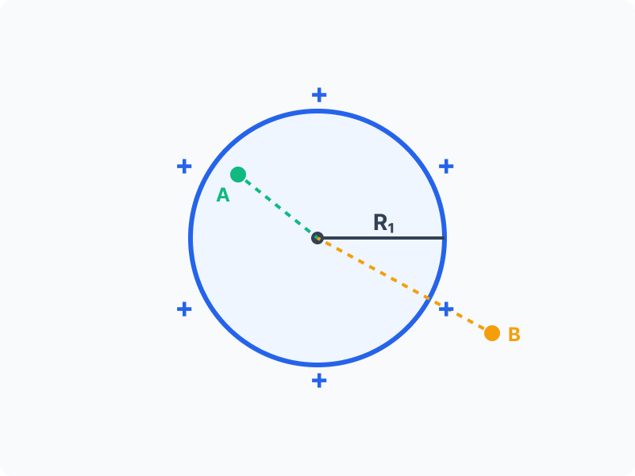

השאלה עוסקת בקליפה כדורית מוליכה ודקה, הטעונה במטען חיובי אחיד, ובודקת את הבנת המושגים הבסיסיים של שדה חשמלי ופוטנציאל חשמלי בנקודות שונות במרחב (בתוך המוליך ומחוצה לו). בנוסף, היא בוחנת את תופעת זרימת המטענים ושוויון הפוטנציאלים כאשר מחברים בין מוליכים באמצעות תיל מוליך דק וארוך.

[תמונת השאלה המקורית]לא נמצאה תמונה בשם question-image.png באותה תיקייה.
תיאור מערכת השאלה והמחשה
להלן ייצוג חזותי של הקליפה המוליכה המיוחסת בשאלה, המציג את חלוקת המטען, רדיוס הקליפה והמיקום היחסי של נקודה A (בתוך חלל הקליפה) ונקודה B (מחוצה לה):

סעיף א'
מה נתון:
בשלב זה נתון לנו כי רדיוס הקליפה המוליכה הוא \(R_1 = 8\text{ cm}\), שלאחר המרת יחידות למטרים (MKS) נכתוב אותו כ-\(R_1 = 0.08\text{ m}\). הקליפה טעונה במטען חיובי של \(q = 2 \cdot 10^{-6}\text{ C}\). בנוסף, נתונה נקודה \(A\) הנמצאת במרחק \(r_1 = 6\text{ cm}\), כלומר \(r_1 = 0.06\text{ m}\) ממרכז הקליפה.
מה מחפשים:
אנו מתבקשים למצוא את גודל השדה החשמלי בנקודה \(A\), כלומר את \(E_A\).
נוסחאות ועקרונות בשימוש: עקרונות: תכונות מוליך אידאלי בשיווי משקל אלקטרוסטטי וחוק גאוס.
פתרון צעד-אחר-צעד:
העיקרון הפיזיקלי של אלקטרוסטטיקה במוליכים קובע כי עודף מטען במוליך הנמצא בשיווי משקל תמיד יתרכז אך ורק על פני השטח החיצוניים שלו. כלל זה תקף כמובן גם לקליפה כדורית מוליכה (מוליך חלול): מכיוון שאין שום מטען נוסף בחלל הפנימי שלה, כל מטען הקליפה יושב על השפה החיצונית בלבד.
לכן, על פי חוק גאוס, אם נדמיין מעטפת כדורית בתוך הקליפה (עבור כל רדיוס שקטן מ-\(R_1\)), המטען הכלוא בתוכה יהיה אפס. מכאן נובע כי השדה החשמלי בכל נקודה בחלל הריק הפנימי הוא אפס. מכיוון שהמרחק של הנקודה \(A\) ממרכז הקליפה קטן מרדיוס הקליפה (\(0.06\text{ m} < 0.08\text{ m}\)), הנקודה נמצאת בתוך חלל זה, ולכן השדה בה שווה לאפס באופן מיידי.
\[ E_A = 0 \]
תשובה סופית: \(E_A = 0\)
טיפ מורה:
תלמידים יקרים, שימו לב שזאת שאלת מתנה! כמעט בכל בגרות בחשמל יש סעיף שבוחן הבנה מושגית ללא חישוב. חשוב לזכור: השדה החשמלי מתאפס לא רק בתוך החומר של מוליך מלא, אלא גם בכל החלל הריק שכלוא בתוך קליפה מוליכה טעונה (כל עוד לא הכנסנו מטענים זרים פנימה). היזהרו לא להציב באופן אוטומטי בנוסחת השדה למטענים נקודתיים.
סעיף ב'
מה נתון:
מתוך הסעיף הקודם אנו יודעים כי מטען הקליפה הוא \(q = 2 \cdot 10^{-6}\text{ C}\), רדיוסה הוא \(R_1 = 0.08\text{ m}\), ונקודה \(A\) נמצאת במרחק \(r_1 = 0.06\text{ m}\) ממרכזה (בתוך הקליפה). הפוטנציאל באינסוף מוגדר כאפס.
מה מחפשים:
את הפוטנציאל החשמלי בנקודה \(A\), שיסומן כ-\(V_A\).
נוסחאות ועקרונות בשימוש: \(V = k\frac{q}{r}\)עקרון: שוויון פוטנציאלים במרחב הפנימי של מוליך.
פתרון צעד-אחר-צעד:
מאחר והשדה החשמלי בתוך קליפה מוליכה הוא אפס, לא מתבצעת עבודה חשמלית בהזזת מטען בתוכה. לכן הפוטנציאל החשמלי בכל חלל הקליפה זהה וקבוע, ושווה במדויק לפוטנציאל שעל פני השטח שלה. נשתמש בקבוע קולון שערכו \(k = 9 \cdot 10^9\text{ N}\cdot\text{m}^2/\text{C}^2\).
נשתמש בנוסחת הפוטנציאל של מטען נקודתי, אך נציב במכנה את רדיוס הקליפה המלא \(R_1\) (ולא את המרחק הפנימי \(r_1\)), כך שנקבל את הפוטנציאל המבוקש בתוך החלל:
נמיר את התשובה לכתיב מדעי תוך שמירה על 3 ספרות מהותיות.
תשובה סופית: \(V_A = 2.25 \cdot 10^5\text{ V}\)
טיפ מורה:
זוהי מלכודת קלאסית! רוב הטעויות של תלמידים נובעות מהצבת המרחק \(r_1\) במקום הרדיוס \(R_1\) במכנה בחישוב הפוטנציאל הפנימי. זכרו תמיד: הפוטנציאל בתוך מוליך זהה לפוטנציאל שעל פני השטח שלו, ולכן עליכם להשתמש ברדיוס המוליך בחישוב.
סעיף ג'
מה נתון:
בשלב זה מוגדרת נקודה חדשה \(B\), הנמצאת במרחק של \(r_2 = 12\text{ cm}\) ממרכז הקליפה. לאחר המרה נקבל \(r_2 = 0.12\text{ m}\). נתוני הקליפה (המטען \(q = 2 \cdot 10^{-6}\text{ C}\) והרדיוס \(R_1 = 0.08\text{ m}\)) נותרו ללא שינוי.
מה מחפשים:
אנו צריכים לחשב את גודל השדה החשמלי בנקודה \(B\), שנסמנו באות \(E_B\).
נוסחאות ועקרונות בשימוש: \(E = k\frac{|q|}{r^2}\)
פתרון צעד-אחר-צעד:
מכיוון שמתקיים \(r_2 > R_1\), הנקודה \(B\) נמצאת מחוץ לקליפה. מחוץ לקליפה כדורית טעונה באופן אחיד, המערכת כולה מתנהגת כאילו כל המטען מרוכז בנקודה אחת במרכזה. לכן מותר לנו להשתמש בנוסחת השדה של מטען נקודתי המופיעה בדף הנוסחאות.
נציב את המטען הכולל ואת המרחק של נקודה \(B\) אל תוך נוסחת השדה החשמלי ונבצע את החישוב האלגברי כדלקמן:
נרשום את התוצאה הסופית בכתיב מדעי ונקפיד על 3 ספרות מהותיות.
תשובה סופית: \(E_B = 1.25 \cdot 10^6\text{ N/C}\)
טיפ מורה:
שימו לב לניסוח השאלה – התבקשנו לחשב את "גודל השדה". גודל של שדה (כמו של כל וקטור בפיזיקה) הוא תמיד ערך חיובי, ולכן מספיק להציג את הערך המוחלט ללא התייחסות לכיוון. עם זאת, חשוב מאוד להבין את המשמעות הכיוונית: כיוון של שדה חשמלי מוגדר תמיד לפי כיוון הכוח שירגיש מטען בוחן חיובי שיוצב בנקודה. מכיוון שהקליפה שלנו טעונה במטען חיובי, היא תפעיל כוח דחייה על מטען בוחן חיובי שכזה, ולכן כיוון השדה בנקודה \(B\) הוא רדיאלי החוצה ממרכז הקליפה.
סעיף ד'
מה נתון:
אנו עובדים עם אותה נקודה \(B\) הממוקמת מחוץ לקליפה במרחק \(r_2 = 0.12\text{ m}\), ועם אותו המטען החשמלי הכולל של הקליפה \(q = 2 \cdot 10^{-6}\text{ C}\).
מה מחפשים:
עלינו לחשב את הפוטנציאל החשמלי בנקודה \(B\), אותו נסמן כ-\(V_B\).
נוסחאות ועקרונות בשימוש: \(V = k\frac{q}{r}\)
פתרון צעד-אחר-צעד:
בדומה לחוקיות של השדה החשמלי, גם הפוטנציאל מחוץ לקליפה כדורית מחושב באופן זהה לפוטנציאל של מטען נקודתי המוצב במרכזה, ולכן נשתמש בנוסחה המוכרת של פוטנציאל של מטען נקודתי.
נציב את הערכים הידועים לנו בנוסחת הפוטנציאל ונבצע את פעולות החישוב הבאות:
בכתיב מדעי מקובל, ועם מספר הספרות המהותיות הנדרש, התוצאה נרשמת כ-1.5, ואין חובה להוסיף אפסים מיותרים באופן מלאכותי.
תשובה סופית: \(V_B = 1.5 \cdot 10^5\text{ V}\)
טיפ מורה:
כלי נהדר לבדיקה עצמית בזמן הבחינה הוא להשוות בין הפוטנציאלים שמצאתם. כאשר אתם משווים בין סעיף ב' לסעיף ד', קל לראות שהפוטנציאל יורד ככל שמתרחקים מהקליפה הטעונה חיובית (מ-\(2.25 \cdot 10^5\text{ V}\) אל \(1.5 \cdot 10^5\text{ V}\)). בדיקה לוגית זו מבטיחה שהתוצאות שלכם עקביות ובעלות היגיון פיזיקלי.
חיבור שתי קליפות מוליכות באמצעות תיל דק וארוך
כאשר מחברים שתי קליפות מוליכות מרוחקות מאוד זו מזו באמצעות תיל מוליך דק וארוך, מתרחשים שני תהליכים מפתח:
שוויון פוטנציאלים: מטענים יזרמו דרך התיל המוליך עד אשר הפוטנציאל החשמלי של שתי הקליפות ישתווה לחלוטין (\(V_1' = V_2'\)).
חוק שימור המטען: סך המטען במערכת כולה נשמר.
סעיף ה'
מה נתון:
בשלב זה של השאלה אנו מחברים לקליפה שלנו (קליפה מספר 1) קליפה מוליכה שנייה שאינה טעונה כלל (\(q_{2,\text{start}} = 0\)) ובעלת רדיוס זהה של \(R_2 = 8\text{ cm} = 0.08\text{ m}\). החיבור נעשה באמצעות תיל מוליך דק וארוך מאוד, נתון המאפשר לנו להתעלם מהשפעות הדדיות ולהניח שהמטען של התיל עצמו הוא לחלוטין זניח. המטען ההתחלתי הכולל במערכת מורכב כעת אך ורק מהמטען של קליפה 1 ולכן מתקיים \(q_{\text{total}} = 2 \cdot 10^{-6}\text{ C}\).
מה מחפשים:
נדרש מאיתנו לקבוע האם גודל השדה החשמלי בנקודה \(B\) (שמרחקה מהקליפה הראשונה נותר קבוע) יהיה קטן, שווה או גדול מגודל השדה שחישבנו בסעיף ג', וכמובן לנמק זאת היטב.
נוסחאות ועקרונות בשימוש: \(V = k\frac{q}{r}\)\(E = k\frac{|q|}{r^2}\) עקרונות: חוק שימור המטען החשמלי, שוויון פוטנציאלים בין מוליכים המחוברים יחדיו.
פתרון צעד-אחר-צעד:
נשתמש בעקרון שימור המטען כדי להרכיב את המשוואה המייצגת את סך המטען במערכת לפני ואחרי החיבור:
\[ q_1' + q_2' = q_{\text{total}} \]
כאשר מחברים את שתי הקליפות, יזרמו מטענים עד להשוואת פוטנציאלים (\(V_1' = V_2'\)). נציב את נוסחת הפוטנציאל של מטען נקודתי עבור כל קליפה למשוואת השוויון ונקבל את הקשר בין המטענים הסופיים:
\[ k\frac{q_1'}{R_1} = k\frac{q_2'}{R_2} \]
מאחר ונתון כי שני הרדיוסים שווים לחלוטין (\(R_1 = R_2\)), מתנאי שוויון הפוטנציאלים אפשר לצמצם את הגורמים המשותפים ומכך נובע בהכרח כי גם המטענים הסופיים יהיו זהים בגודלם: \(q_1' = q_2'\).
מאחר והמטען שנותר כעת על הקליפה הראשונה קטן משמעותית מהמטען ההתחלתי שלה (כלומר מתקיים \(q_1' < q_{1,\text{start}}\)), והמרחק לאותה נקודה \(B\) נשאר זהה וקבוע, הרי שעל פי נוסחת השדה המוכרת \(E = k\frac{q_1'}{r^2}\) אנו מסיקים בוודאות שגודל השדה החדש בנקודה \(B\) יפחת בהתאמה.
תשובה סופית: השדה בנקודה \(B\) יהיה קטן יותר.
טיפ מורה:
ניתן בהחלט לחשוב על המקרה הזה גם בצורה אינטואיטיבית לחלוטין. מכיוון שלשתי הקליפות יש בדיוק את אותם "נתונים גאומטריים" (קיבול פיזיקלי זהה), הן תמיד יתחלקו במטען הקיים שווה בשווה. לכן, ניתן לראות כי לקליפה הראשונה פשוט "ברח" חצי מהמטען שלה אל הקליפה השנייה, וכפועל יוצא מכך, השדה החשמלי שהיא עצמה מייצרת בסביבתה הקרובה נחלש בדיוק פי שניים.
סעיף ו'
מה נתון:
כעת מבצעים שינוי משמעותי בתנאי הניסוי. קליפה מספר 1 שוב מחוברת באמצעות תיל, אך הפעם היא מחוברת לקליפה 2 שרדיוסה כפול ושווה ל-\(R_2 = 16\text{ cm} = 0.16\text{ m}\). בנוסף, קליפה 2 אינה ניטרלית אלא נושאת מטען התחלתי משלה שגודלו הוא \(q_{2,\text{start}} = 2 \cdot 10^{-6}\text{ C}\). המטען ההתחלתי של קליפה 1 טרם החיבור חזר להיות כפי שהיה בתחילת השאלה, כלומר \(q_{1,\text{start}} = 2 \cdot 10^{-6}\text{ C}\). עלינו לחשב תחילה את המטען הכולל של המערכת המשותפת לפני החיבור: \(Q_{\text{total}} = 2 \cdot 10^{-6} + 2 \cdot 10^{-6} = 4 \cdot 10^{-6}\text{ C}\).
מה מחפשים:
אנו מתבקשים לקבוע שוב האם גודל השדה בנקודה \(B\) בעקבות תהליך החיבור החדש יהיה גדול, קטן או שווה לערכו שחישבנו בסעיף ג', והפעם חובה עלינו להוכיח זאת בחישוב מדויק ומלא.
נוסחאות ועקרונות בשימוש: \(V = k\frac{q}{r}\)\(E = k\frac{|q|}{r^2}\) עקרונות: חוק שימור המטען החשמלי, שוויון פוטנציאלים בין מוליכים המחוברים יחדיו.
פתרון צעד-אחר-צעד:
נבסס את הפתרון על משוואת שימור המטען הכולל לאחר החיבור:
\[q_1'' + q_2'' = Q_{\text{total}}\]
במקביל, נשווה שוב פוטנציאלים תוך שימוש בנוסחת הפוטנציאל למטען נקודתי. אם נתבונן מתוך משוואת שוויון הפוטנציאלים (\( k\frac{q_1''}{R_1} = k\frac{q_2''}{R_2} \)), נוכל בקלות לצמצם את קבוע קולון \(k\) משני האגפים ולהציב ישירות את ערכי הרדיוסים הידועים כדי לקבל את הקשר הבא בין המטענים החדשים:
מכיוון שהערך \(1.33 \cdot 10^{-6}\text{ C}\) עדיין קטן במידה ניכרת מ-\(2 \cdot 10^{-6}\text{ C}\) (שהוא המטען המקורי של קליפה 1 טרם החיבורים מכל סוג), עולה בבירור כי המטען על הקליפה הזו ירד. כתוצאה ישירה מכך, גודל השדה בנקודה \(B\), אשר תלוי אך ורק בישירות במטען הקליפה שהוא מקיף, יקטן בהכרח גם הוא בהשוואה למצבו העצמאי בסעיף ג'. על מנת להיות שלמים עם הדרך, נדגים ונוכיח זאת גם אלגברית בעזרת הצבה בנוסחת השדה החשמלי:
תוצאה מספרית זו, כפי שניתן לראות בקלות, קטנה בבירור מערך השדה המקורי שהוא \(1.25 \cdot 10^6\text{ N/C}\).
תשובה סופית: השדה בנקודה \(B\) יהיה קטן יותר.
טיפ מורה:
הקסם האמיתי של הפיזיקה מתגלה במלואו כאן! שימו לב לכך שלמרות שהוספנו למערכת מטען חיובי נוסף, השדה החשמלי סביב קליפה 1 דווקא ירד. מדוע תופעה זו מתרחשת? הסיבה נעוצה בכך שהפוטנציאל ההתחלתי של קליפה 1 היה גבוה יותר מהפוטנציאל של קליפה 2 (מכיוון שהיה לה רדיוס קטן יותר לאותה כמות מטען התחלתית). על פי כללי האלקטרוסטטיקה מטענים חיוביים תמיד יזרמו מפוטנציאל גבוה לנמוך, ולכן קליפה 1 "נאלצה לתרום" חלק ממטענה לקליפה 2 עד אשר הגיעו לנקודת האיזון המוחלטת.
נוסח השאלה המקורית
[תמונת השאלה המקורית]לא נמצאה תמונה בשם question-image.png.